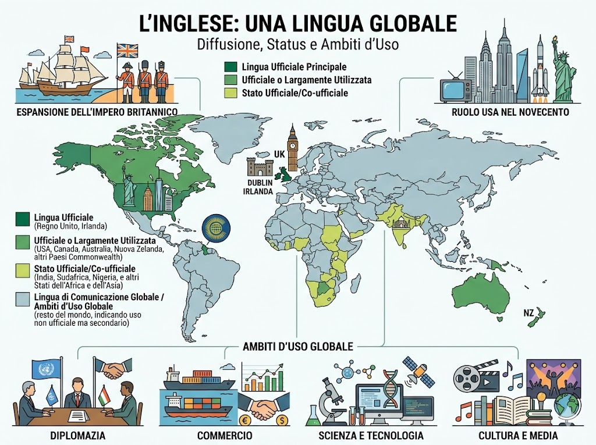
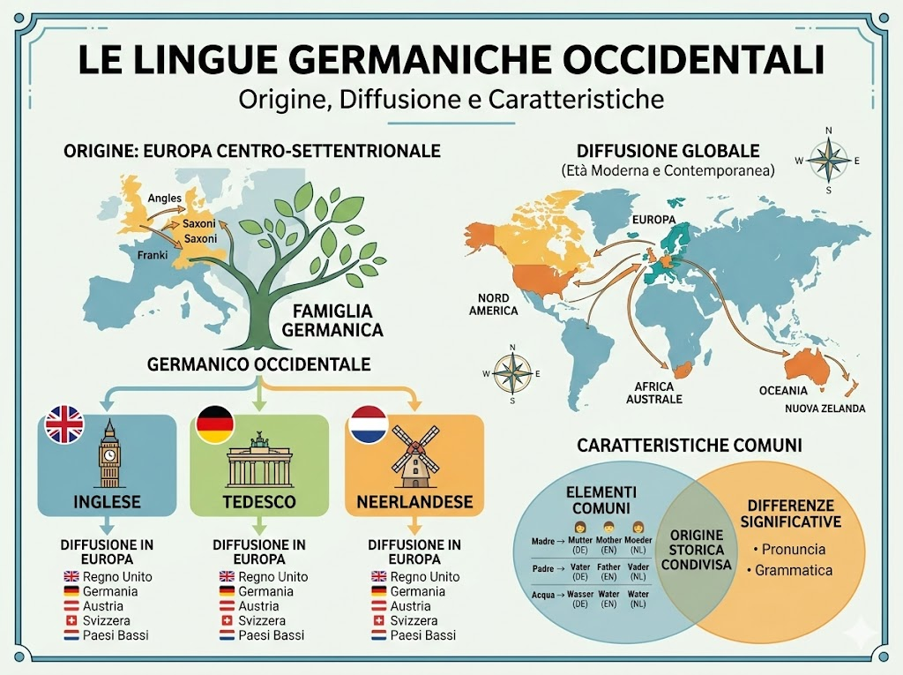
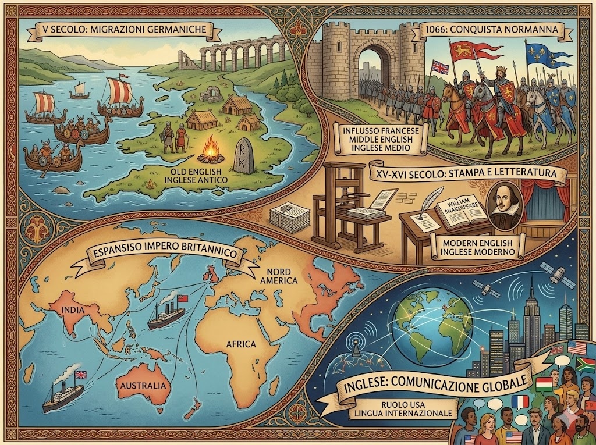

L’inglese è la lingua ufficiale del Regno Unito e una delle lingue ufficiali dell’Irlanda. È inoltre lingua ufficiale o largamente utilizzata in numerosi Paesi che fanno parte del Commonwealth, come Stati Uniti, Canada, Australia e Nuova Zelanda. L’inglese ha uno status ufficiale o co-ufficiale anche in diversi Stati dell’Africa e dell’Asia, tra cui India, Sudafrica e Nigeria. Grazie all’espansione dell’Impero britannico e al ruolo internazionale degli Stati Uniti nel Novecento, l’inglese è oggi una delle principali lingue di comunicazione globale, ampiamente usata nella diplomazia, nel commercio, nella scienza e nella cultura.

Le lingue germaniche occidentali sono un gruppo di lingue appartenenti alla famiglia germanica, sviluppatesi dalle antiche parlate delle popolazioni germaniche dell’Europa centro-settentrionale. Tra le principali lingue germaniche occidentali ci sono l’inglese, il tedesco e il neerlandese. Sono diffuse soprattutto in Europa, in particolare in Germania, Austria, Svizzera, Paesi Bassi e Regno Unito, ma anche in Nord America, in Africa australe e in Oceania, grazie alle migrazioni e alle espansioni coloniali tra età moderna e contemporanea. Pur presentando differenze significative nella pronuncia e nella grammatica, queste lingue condividono numerosi elementi comuni nel lessico e nella struttura, che testimoniano la loro origine storica condivisa.

La storia dell’inglese inizia con le migrazioni delle popolazioni germaniche, come Angli, Sassoni e Juti, che nel V secolo si stabilirono nelle isole britanniche dopo il ritiro dell’Impero Romano. Dalle loro parlate nacque l’inglese antico, profondamente influenzato anche dalle incursioni vichinghe. Un momento decisivo fu la conquista normanna del 1066, guidata da Guglielmo il Conquistatore, che introdusse un forte influsso del francese nella lingua, dando origine all’inglese medio. Tra il XV e il XVI secolo, con l’affermazione della stampa e l’opera di autori come William Shakespeare, l’inglese moderno iniziò a consolidarsi come lingua della cultura e della letteratura. Nei secoli successivi, grazie all’espansione dell’Impero britannico e al ruolo internazionale degli Stati Uniti, l’inglese si diffuse in tutto il mondo, affermandosi come una delle principali lingue della comunicazione globale.
